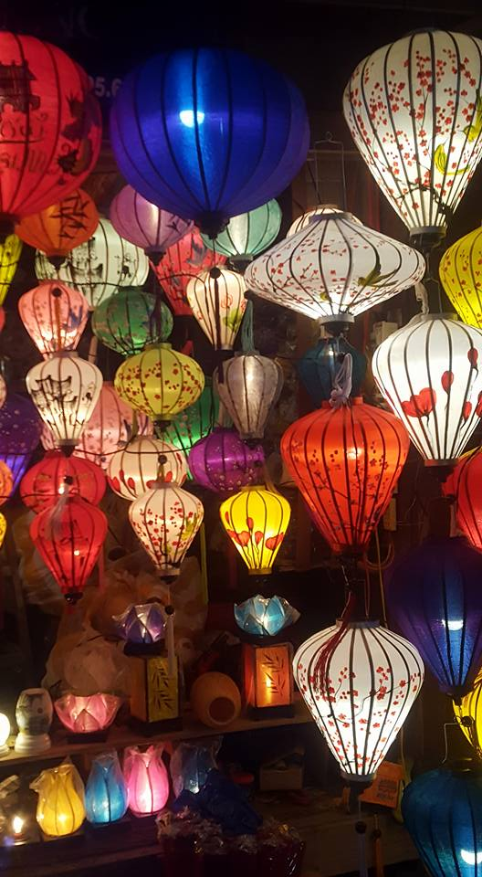

Image referenced from inside the project

Referencing an outside URL

Image referencing another page from an image
Adding a little style to the image
Hoi An Lanterns referenced from inside the project

Vietnam Power Lines refernced from inside the project

Hanoi "Red Bridge" from an outside URL